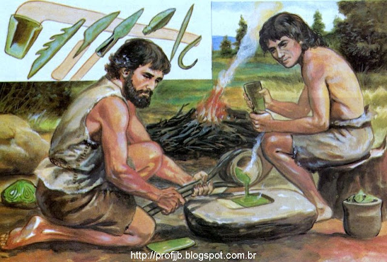

Por volta de 4.000 a.C., o domínio técnico sobre a fundição de minérios marcou o fim da Pré-História tradicional e o limiar da Idade Antiga. O primeiro metal amplamente trabalhado foi o cobre, seguido posteriormente pelo bronze (liga metálica de cobre e estanho) e, mais tarde, pelo resistente ferro.
Essa verdadeira "alquimia primitiva" revolucionou a fabricação de instrumentos de trabalho, armas e utensílios. O ferro, por ser um minério mais abundante, alterou definitivamente as técnicas agrícolas e bélicas, permitindo o desbravamento de florestas e o fortalecimento de exércitos organizados.
Com ferramentas mais eficientes e maior produtividade agrícola, as antigas aldeias neolíticas expandiram-se vertiginosamente, transformando-se em centros urbanos fortificados. A necessidade de gerenciar grandes obras hidráulicas (como canais de irrigação e diques) exigiu uma estrutura administrativa complexa.
🏛️ O Estado e as Classes Sociais: O crescimento das cidades consolidou a divisão social estamental. Sacerdotes, guerreiros e reis assumiram o controle político e religioso, centralizando os tributos e o poder. É nesse cenário que emergem as primeiras civilizações hidráulicas e, com elas, a necessidade de registros contábeis que culminariam na invenção da escrita.
A metalurgia também impulsionou o comércio de longa distância. Como os minérios não estavam distribuídos uniformemente pelo território, rotas comerciais terrestres e marítimas foram estabelecidas, conectando diferentes culturas, difundindo inovações tecnológicas e encerrando o isolamento das antigas comunidades neolíticas.
O desenvolvimento da metalurgia no final do período neolítico representou um salto tecnológico sem precedentes. A capacidade de fundir o cobre, o bronze e, posteriormente, o ferro permitiu a confecção de ferramentas de corte mais duráveis e resistentes, impactando diretamente a produtividade do trabalho humano e a estruturação das sociedades.
Qual foi o principal desdobramento político e social decorrente do avanço da metalurgia e da expansão urbana na Idade dos Metais?
Resolução: O avanço técnico da metalurgia e o crescimento urbano exigiram uma administração complexa para gerir a produção, o excedente e as obras públicas, culminando na estratificação social, no surgimento do Estado e no poder centralizado.
“A busca por minérios como o cobre e o estanho — essenciais para a liga do bronze — bem como a posterior difusão do ferro, impulsionaram a abertura de rotas comerciais de longo alcance. Regiões antes isoladas passaram a interagir economicamente, o que acelerou a difusão cultural e o desenvolvimento das primeiras formas de registro escrito para controle de estoques e tributos.”
O texto aponta que o progresso técnico da Idade dos Metais estimulou diretamente:
Resolução: A escassez localizada de minérios forçou o comércio interregional. Com o aumento do fluxo de mercadorias e tributos, tornou-se imperativa a criação de sistemas de controle administrativo e contábil, impulsionando o nascimento da escrita.